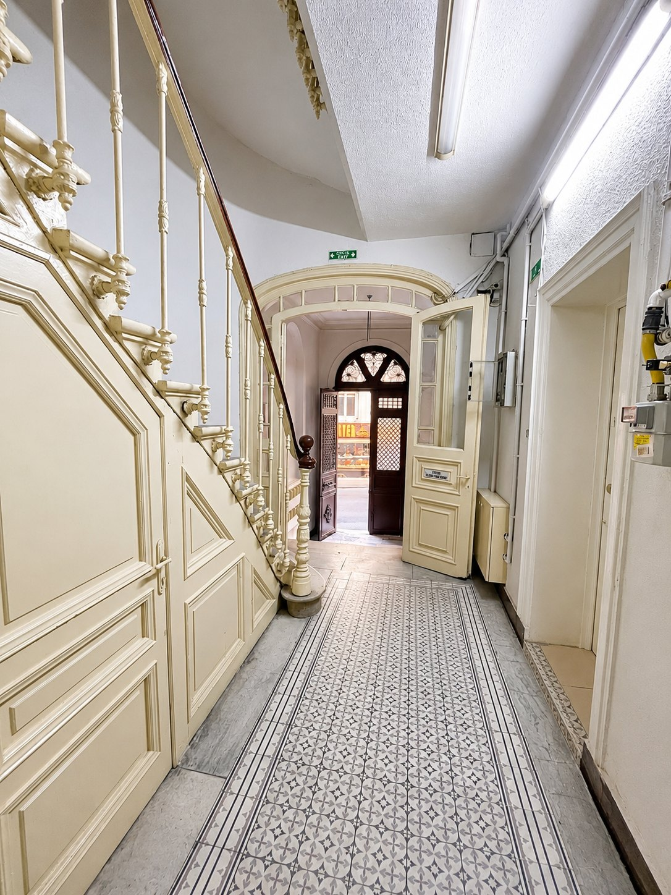

Özen
Dosyaların belge, delil ve usulî süreçleri kendi bütünlüğü içinde ele alınır.
Karadoğan Avukatlık Bürosu, İstanbul Beyoğlu’nda, Sıraselviler Caddesi üzerinde faaliyet gösteren butik bir hukuk bürosudur.
Büro, dava takibi ve hukuki danışmanlık süreçlerinde her dosyanın kendi koşullarını dikkate alan özenli ve planlı bir çalışma anlayışı benimser. Bu yaklaşım, sürecin yalnızca hukuki sonucuna değil, aynı zamanda dosyanın delil durumu, usulî aşamaları, olası riskleri ve uygulanabilecek hukuki yollarına da odaklanır.
Karadoğan Avukatlık Bürosu’nun çalışma dili sade, ölçülü ve doğrudandır. Hukuki süreçlerde müvekkilin dosya hakkında bilgi sahibi olması, izlenecek yolun anlaşılır şekilde değerlendirilmesi ve süreç yönetiminin düzenli yürütülmesi önemsenir.

Yaklaşım
Büro yapısı, her dosyaya ayrılan zamanın ve dikkatli hazırlığın korunmasına imkân verecek şekilde kurgulanmıştır. Bu nedenle hizmet dili abartılı vaatlerden uzak, hukuki değerlendirme ve süreç yönetimi eksenindedir.
Dosyaların belge, delil ve usulî süreçleri kendi bütünlüğü içinde ele alınır.
Dilekçe, başvuru, duruşma ve kanun yolu süreçleri önceden yapılandırılır.
Dosya gelişmeleri ve hukuki seçenekler, mümkün olduğunca açık ve anlaşılır şekilde aktarılır.